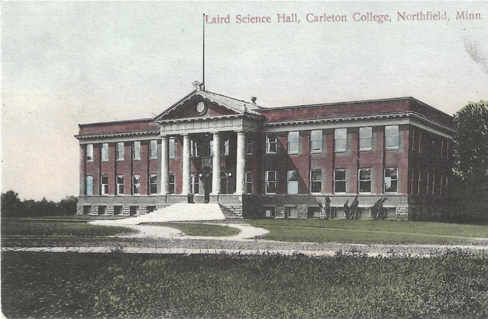
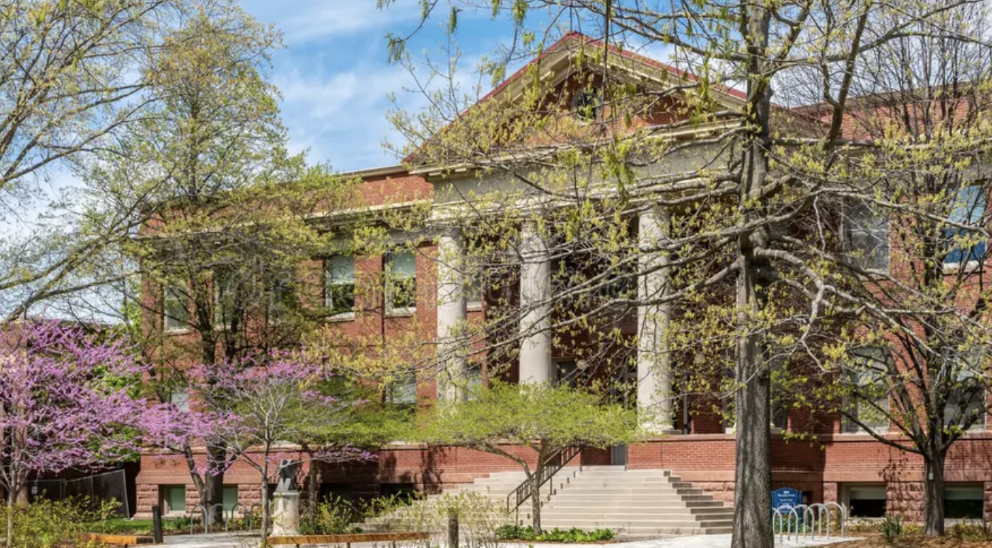

Laird Hall was built in 1905 by Architect firm Bertrand and Chamberlin. Laird was originally a science department, but has not been repurposed into the English department’s headquarters. Laird has similar styling to Sayles, and invokes the American Renaissance style.

The American Renaissance style was a time of national confidence. It normally consists of immense ornamentation, and symmetry is key. Laird is a part of the “Early Buildings” era.

← Back to Map